Vaccinations: age-structured model
Ioana Bouros
SEIRDVAge.Rmd
library(comomodels)
library(tidyverse)
#> ── Attaching packages ─────────────────────────────────────── tidyverse 1.3.1 ──
#> ✔ ggplot2 3.3.5 ✔ purrr 0.3.4
#> ✔ tibble 3.1.6 ✔ dplyr 1.0.7
#> ✔ tidyr 1.1.4 ✔ stringr 1.4.0
#> ✔ readr 2.1.1 ✔ forcats 0.5.1
#> ── Conflicts ────────────────────────────────────────── tidyverse_conflicts() ──
#> ✖ dplyr::filter() masks stats::filter()
#> ✖ dplyr::lag() masks stats::lag()
library(ggplot2)
library(glue)
library(dplyr)Introduction
This document explains the basics of the SEIRV model with age structure. The model describes how populations of susceptible, exposed, infectious, recovered and vaccinated individuals evolve over time. Waning immunity is also considered in this model, so there is a constant supply of susceptibles in the population which makes the model more realistic. Contact data and age structure are also considered in the model.
However, in reality, a susceptible individual from a given age class can become infected from any age class: to capture this aspect of the model, infected individuals of any age are supposed to inter-mix, with the mixing rate dictated by a so-called “contact matrix”, \(C\).
The elements of contact matrices, \(C_{i,j}\) indicate the expected number of contacts an individual of age class \(i\) experiences with age class \(j\) per day. In this package, we include country-level estimates of contact matrices (Prem et al., 2017; for full details see data documentation). There are actually four types of contact matrix corresponding to daily numbers of contacts at home, work, school and all other settings. Here, we visualise these for India.
load(file = "../data/contact_home.rda")
load(file = "../data/contact_work.rda")
load(file = "../data/contact_school.rda")
load(file = "../data/contact_other.rda")
# reformat matrices for plotting
ages <- seq(0, 80, 5)
age_names <- vector(length = 16)
for(i in seq_along(age_names)) {
age_names[i] <- paste0(ages[i], "-", ages[i + 1])
}
format_matrix <- function(contact_matrix, age_names) {
colnames(contact_matrix) <- age_names
contact_matrix$age_infectee <- age_names
contact_matrix %>%
pivot_longer(all_of(age_names)) %>%
rename(age_infector=name) %>%
mutate(age_infector=fct_relevel(age_infector, age_names)) %>%
mutate(age_infectee=fct_relevel(age_infectee, age_names))
}
c_home <- format_matrix(contact_home$India, age_names) %>% mutate(type="home")
c_work <- format_matrix(contact_work$India, age_names) %>% mutate(type="work")
c_school <- format_matrix(contact_school$India, age_names) %>% mutate(type="school")
c_other <- format_matrix(contact_other$India, age_names) %>% mutate(type="other")
c_all <- c_home %>%
bind_rows(c_work) %>%
bind_rows(c_school) %>%
bind_rows(c_other)
# plot all
c_all %>%
ggplot(aes(x=age_infector, y=age_infectee, fill=value)) +
xlab("age group of infector") + ylab("age group of infectee") +
theme(text = element_text(size=20),
axis.text.x = element_text(angle = 90, vjust = 0.5, hjust=1)) +
geom_tile() +
scale_fill_viridis_c() +
facet_wrap(~type)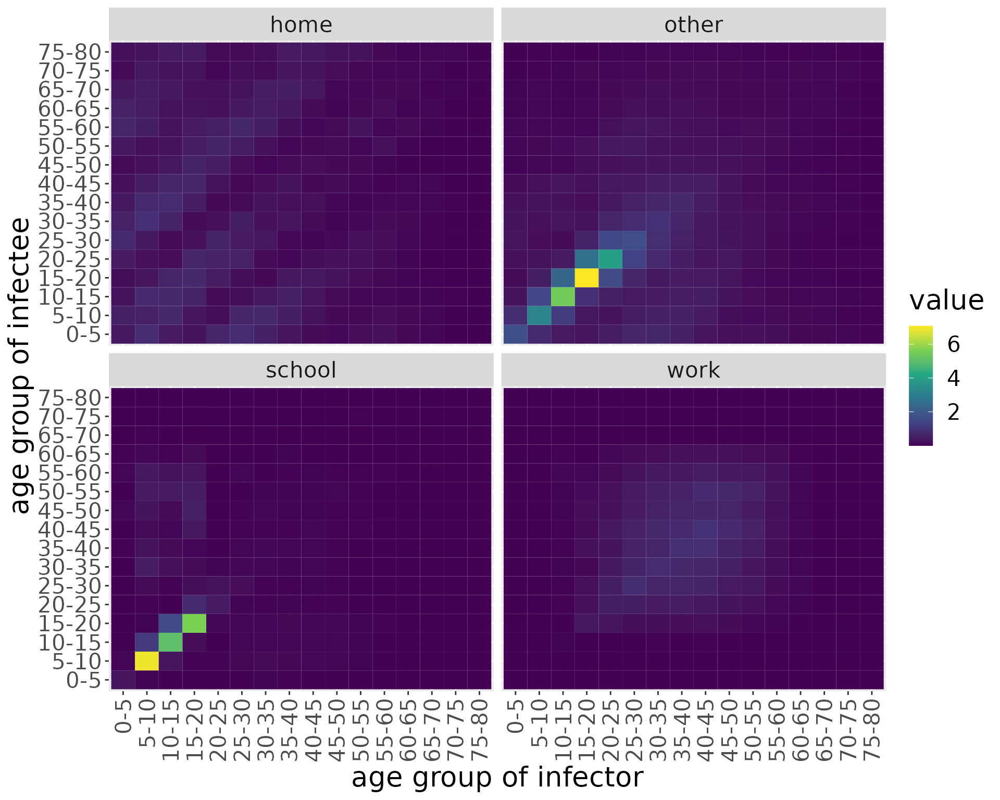
We can see that the majority of contacts fall between younger individuals, occurring at home or “other” locations. At home, however, there is more substantial intergenerational mixing than in other settings.
The model we introduce here does not compartmentalise individuals according to location, so we make an overall contact matrix by summing these together.
c_combined <- c_all %>%
group_by(age_infectee, age_infector) %>%
summarise(value=sum(value))
#> `summarise()` has grouped output by 'age_infectee'. You can override using the `.groups` argument.
c_combined %>%
ggplot(aes(x=age_infector, y=age_infectee, fill=value)) +
xlab("age group of infector") + ylab("age group of infectee") +
theme(text = element_text(size=20),
axis.text.x = element_text(angle = 90, vjust = 0.5, hjust=1)) +
geom_tile() +
scale_fill_viridis_c()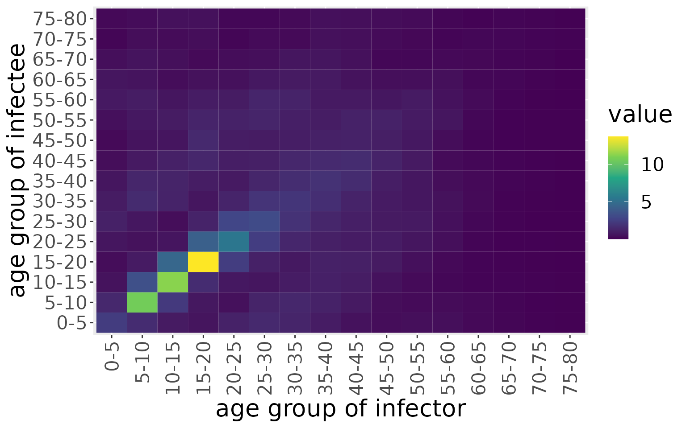
We now use this contact matrix to allow infections to pass between age groups. To do so, we amend the governing equations for the susceptibles and exposed individuals within age class \(i\):
\[\begin{align} \frac{\text{d}S_i}{\text{d}t} &= -\beta S_i \Sigma_{j}C_{ij} I_j\\ \frac{\text{d}E_i}{\text{d}t} &= \beta S_i \Sigma_{j}C_{ij} I_j -\kappa E_i\\ \end{align}\]
Specifically, the term \(S_i \Sigma_{j}C_{ij} I_j\) effectively indicates the expected number of contacts between susceptible individuals of age class \(i\) with infected individuals across all classes.
The SEIRDVAge Model
The SEIRDVAge model consists of five ODEs describing five populations of susceptible, recovered, infectious, recovered and vaccinated individuals. Susceptible individuals (\(S\)) have not been exposed to the virus. Exposed individuals (\(E\)) have been exposed to the virus and have been infected but are not yet infectious to others; they are in the incubation period. Infectious individuals (\(I\)) can spread the virus to others. Recovered individuals (\(R\)) are no longer infectious, but they can return to the susceptible population when they lose their immunity. Vaccinated individuals (\(V\)) cannot become infected and are not ill at the time, but as it was the case with the recovered population, their immunity is temporary and they can become susceptible again with a certain rate. We can vaccinate not only the susceptibles, but also \(E\), \(I\) and \(R\)s. However, they have already been exposed to the illness so they do not change compartment assignment. Births and deaths unrelated to the infection are not considered in this model. The ODEs describing how the five populations evolve over time are \[\frac{\text{d}S_i}{\text{d}t} = -\beta S_i \Sigma_{j}C_{ij} I_j - \nu \text{Inter}_i(t) S_i + \delta_{V} V_i + \delta_{R} R_i + \delta_{VR} VR_i,\] \[\frac{\text{d}E_i}{\text{d}t} = \beta S_i \Sigma_{j}C_{ij} I_j -\kappa E_i,\] \[\frac{\text{d}I_i}{\text{d}t} = \kappa E_i - (\gamma + \mu) I_i,\] \[\frac{\text{d}R_i}{\text{d}t} = \gamma I_i - \delta_R R_i - \nu \text{Inter}_i(t) R_i,\] \[\frac{\text{d}V_i}{\text{d}t} = \nu \text{Inter}_i(t) S_i - \delta_V V_i\] \[\frac{\text{d}VR_i}{\text{d}t} = \nu \text{Inter}_i(t) R_i - \delta_{VR} VR_i\]
where \(\beta\), \(\kappa\), \(\gamma\), \(\mu\), \(\nu\), \(\delta_V\), \(\delta_R\) and \(\delta_{VR}\) are positive parameters. The rate at which susceptible individuals are infected depends on the fraction of the population that is susceptible, the fraction of the population that is infectious, and the odds of an infectious individual infecting a susceptible individual, \(\beta\). This is represented in the first terms on the right-hand side of \(\text{d}S/ \text{d}t\) and \(\text{d}E/ \text{d}t\). Exposed individuals become infectious at rate \(\kappa\). \(1/ \kappa\) is the incubation time of the virus, i.e. how many days after exposure the individual becomes infectious to others. Infectious individuals can either recover or die because of the disease. Infectious individuals recover in \(1/ \gamma\) days, thus individuals recover at rate \(\gamma\). Similarly, infectious individuals die due to the infection after \(1/ \mu\) days, making the death rate \(\mu\). Susceptible individuals are vaccinated at a maximum rate \(\nu\). Among those who are immune (recovered and vaccinated), people lose their immunity against the virus at different rates depending on what type of immunity they acquired: \(\delta_V\) for those vaccinated, \(\delta_R\) for those previously infected and \(\delta_{VR}\) for those previously infected that received the vaccine after they recovered. \(\text{Inter}(t)\) is the value at time t of the intervention protocol defined by the intervention parameters.
In addition to these five main ODEs, the model also keeps track of the cumulative number of cases (\(C\)) and the cumulative number of disease-related deaths (\(D\)) over time \[\frac{\text{d}C_i}{\text{d}t} = \beta S_i \Sigma_{j}C_{ij} I_j,\] \[\frac{\text{d}D_i}{\text{d}t} = \mu I_i.\]
The system is closed by specifying the initial conditions \[S(0) = S_0,\ E(0) = E_0,\ I(0) = I_0,\ R(0) = R_0,\ V(0) = V_0, VR(0) = VR_0,\ C(0) = 0,\ D(0) = 0.\] In the implementation of the model in this package, the variables are normalized so \(S(t) + E(t) + I(t) + R(t) + V(t) + VR(t) + D(t) \equiv 1\) for any given \(t\). This means that each of these state variables represents the fraction of the population in each of these states at a given point in time.
We next illustrate how this model works using functionality available in comomodels.
Simulation examples
Now we create a model that includes this age-structured mixing. Since the contact matrices have 16 age classes, we instantiate a model with this number of classes. We also give it transmission parameters, populate the age classes with initial conditions and use our overall contact matrix.
We use country-level demographics from the UN and, for this example, initialise the model with a uniform initial infected population of 1% across all age groups. The remaining 99% of the population starts as susceptible.
load(file = "../data/population.rda")
# use demographic data to create normalised population fractions
pops = population[population$country == 'India', ]$pop
pop_fraction = pops/sum(pops)
## the contact matrix has an upper group of 80+, so we sum the remaining fractions beyond this point
pop_fraction[16] = sum(pop_fraction[16:21])
pop_fraction = pop_fraction[1:16]
# reshape contact matrix into 16x16 form
n_ages <- 16
c_combined_wider <- c_combined %>%
pivot_wider(id_cols = age_infectee, names_from = age_infector,
values_from=value) %>%
ungroup() %>%
select(-age_infectee) %>%
as.matrix()
# create model
my_model <- SEIRDVAge(n_age_categories = n_ages,
contact_matrix = c_combined_wider,
age_ranges = as.list(age_names))Next, we set the parameter values for \(\beta\), \(\kappa\), \(\gamma\), \(\mu\), \(\nu\), \(\delta_V\), \(\delta_R\) and \(\delta_{VR}\). For results inspired by the COVID pandemic, the mortality parameter \(\mu\) is age-dependent as according to Verity (2020):
mu <- c(0.000016, 0.000016, 0.00007, 0.00007, 0.00031, 0.00031, 0.0026, 0.0026,
0.0048, 0.0048, 0.006, 0.006, 0.019, 0.019, 0.043, 0.043)
params <- list(beta=1, kappa=0.9, gamma=0.5, mu=mu, nu=0.4, delta_V=0.1,
delta_R=0.05, delta_VR = 0.02)
transmission_parameters(my_model) <- paramsTo check that the parameters have been set correctly, we call
transmission_parameters(my_model)
#> $beta
#> [1] 1
#>
#> $kappa
#> [1] 0.9
#>
#> $gamma
#> [1] 0.5
#>
#> $mu
#> [1] 1.6e-05 1.6e-05 7.0e-05 7.0e-05 3.1e-04 3.1e-04 2.6e-03 2.6e-03 4.8e-03
#> [10] 4.8e-03 6.0e-03 6.0e-03 1.9e-02 1.9e-02 4.3e-02 4.3e-02
#>
#> $nu
#> [1] 0.4
#>
#> $delta_V
#> [1] 0.1
#>
#> $delta_R
#> [1] 0.05
#>
#> $delta_VR
#> [1] 0.02We now need to set the initial conditions for the model. We only set the initial conditions \(S(0)\), \(E(0)\), \(I(0)\), \(R(0)\), \(V(0)\) and \(VR(0)\).
initial_conditions(my_model) <- list(S0=pop_fraction*0.99,
E0=rep(0, n_ages),
I0=pop_fraction*0.01,
R0=rep(0, n_ages),
V0=rep(0, n_ages),
VR0=rep(0, n_ages),
D0=rep(0, n_ages))The initial conditions must sum to one. If they do not, an error is thrown.
Now we simulate the system from \(t=0\) days to \(t=200\) days.
interven <- vector(mode = "list", length = n_ages)
for(i in 1:n_ages){
if(is.element(i, 1:2)){
interven[[i]]$starts <- 150
interven[[i]]$stops <- 190
}
else if(is.element(i, 3:5)){
interven[[i]]$starts <- 120
interven[[i]]$stops <- 180
}
else if(is.element(i, 14:16)){
interven[[i]]$starts <- 30
interven[[i]]$stops <- 110
}
else{
interven[[i]]$starts <- 100-7*i
interven[[i]]$stops <- 190-7*i
}
interven[[i]]$coverages <- 1
}
interventions(my_model) <- interven
times <- seq(0, 200, by = 1)
out_df <- run(my_model, times)The added intervention feature allows for variable levels of vaccination in a population. In most cases, a vaccine is not available or considered necessary right from the start of an epidemic so there is a delay in vaccination. Similarly, vaccination programs may not run at the same rate all the time, so such fluctuations need to be taken into account in our modeling. Vaccination levels and start times may differ between different age groups. In this instantiation of the model, vaccination of the each age group occurs at a different stage.
Below we can see a plot of the a classical level of interventions that occur at each time step.
parameters <- interven
sim_parms <- SimulationParameters(start=0, stop=200, tstep = 0.1)
interventions <- vector(mode = "list", length = n_ages)
for(i in 1:n_ages){
int_parms <- InterventionParameters(start=parameters[[i]]$starts,
stop=parameters[[i]]$stops,
coverage=parameters[[i]]$coverages)
print(intervention_protocol(int_parms, sim_parms, 1) %>%
ggplot(aes(x=time, y=coverage)) +
geom_line() +
scale_color_brewer(palette = "Dark2") +
labs(x = "time (days)", y = paste0("level of intervention for ages\n", age_names[i])) +
theme(legend.position = "bottom", legend.title = element_blank(),
text = element_text(size = 20)))
}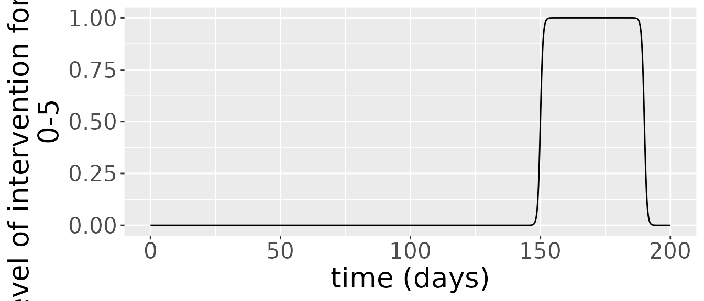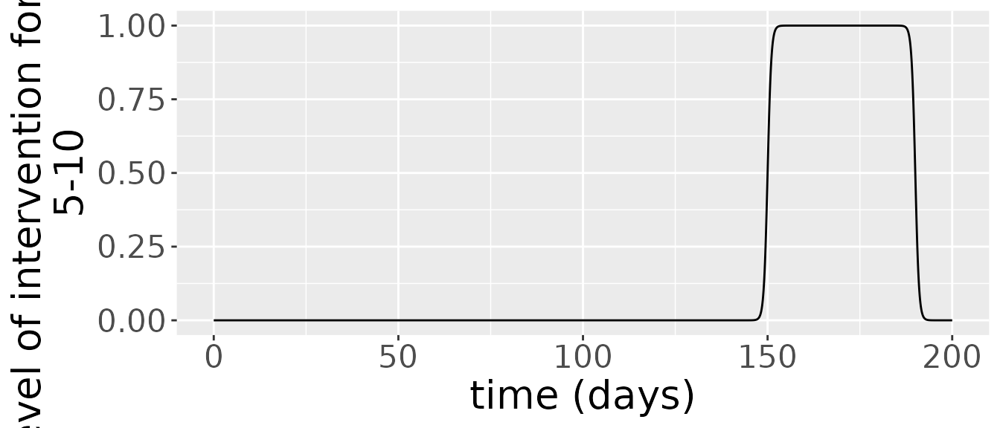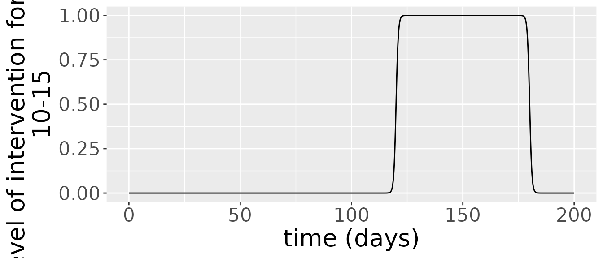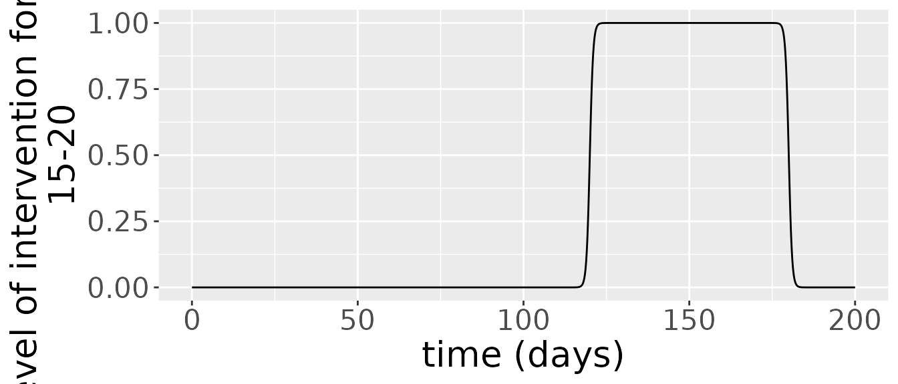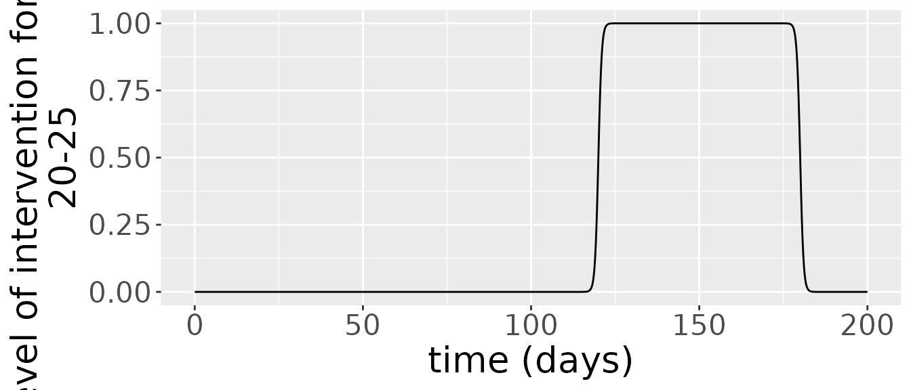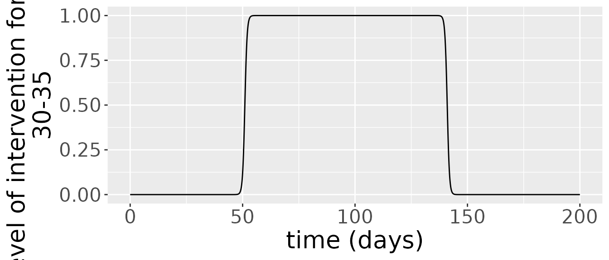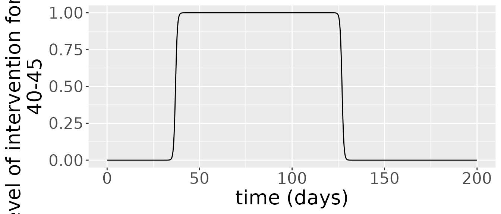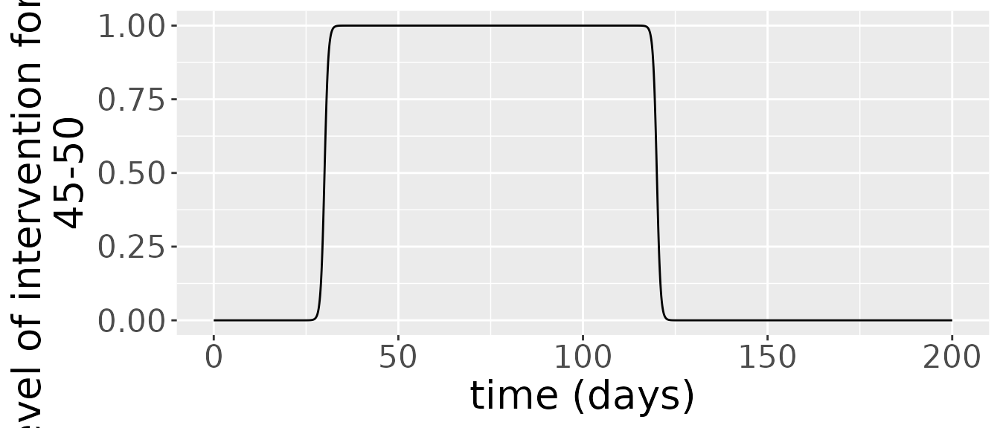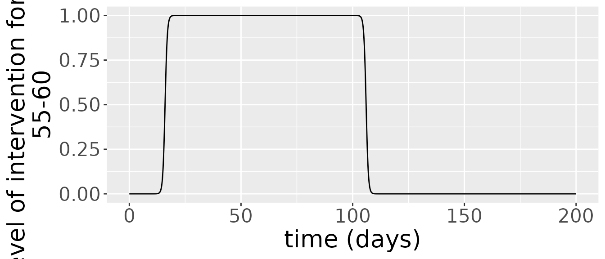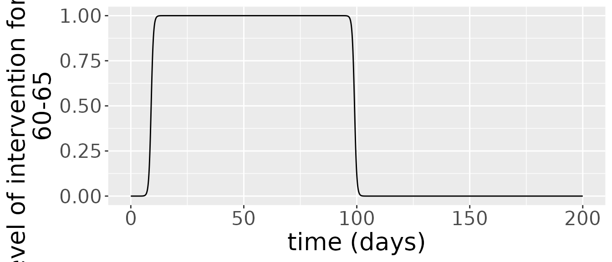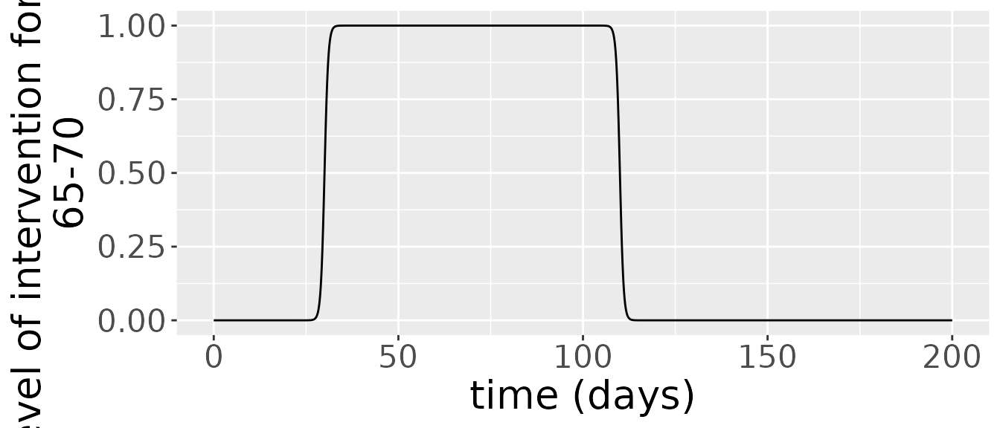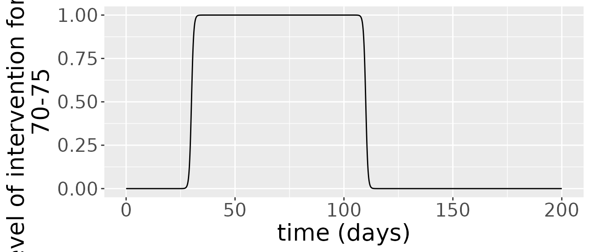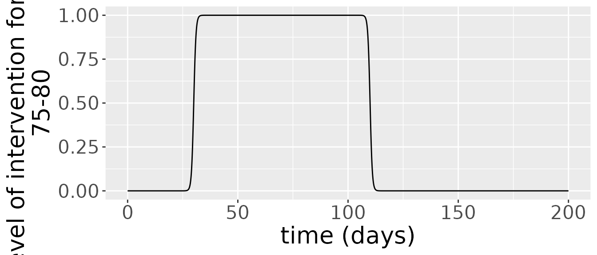 Interventions for this model last several days at least and have several days between them.
The simulation returns two objects: one is a data frame comprising the states over time.
states = out_df$states
changes = out_df$changes
states %>%
ggplot(aes(x=time, y=value, colour=age_range)) +
geom_line() +
facet_wrap(~compartment) +
scale_colour_viridis_d() +
labs(x = "time (days)", y = "fraction of the population") +
theme(text = element_text(size = 20)) 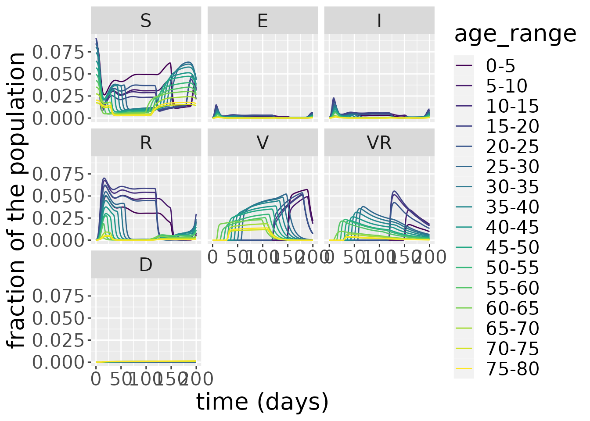 Zooming in on the infected population, we see that the younger age groups have the highest peak infected population levels. Moreover, the waning immunity feature allows for multiple peaks to occur in the number of infected, centered around 12.5, the second tailing right after the first one, and another wave beginning at around 160 and peaking towards the end of the time interval. For the younger age groups the number of daily infections remains somewhat constant until they drop around day 125.
states %>%
filter(compartment=="I") %>%
ggplot(aes(x=time, y=value, colour=age_range)) +
geom_line() +
facet_wrap(~compartment) +
scale_colour_viridis_d() +
labs(x = "time (days)", y = "fraction of the population") +
theme(text = element_text(size = 20)) 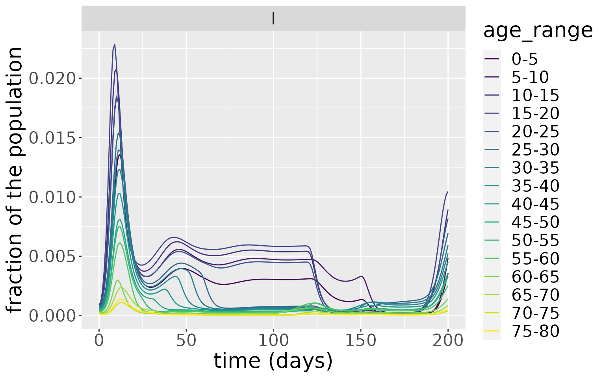
The simulation also outputs incidence and deaths. These are derived from the state variables. Incidence is just the difference between the cumulative number of cases between two time points,
\[ \text{incidence(t)} = C(t) - C(t - 1),\]
since this shows the number of cases which have arisen between these time points. Deaths are also given by a difference, but, in this instance, between the cumulative number of deaths at two consecutive time points:
\[ \text{deaths(t)} = D(t) - D(t - 1).\]
changes <- out_df$changes
changes %>%
filter(compartment=="Incidence") %>%
ggplot(aes(x=time, y=value, colour=age_range)) +
geom_line() +
facet_wrap(~compartment, scales="free") +
scale_colour_viridis_d() +
labs(x = "time (days)", y = "fraction of the population") +
theme(text = element_text(size = 20)) 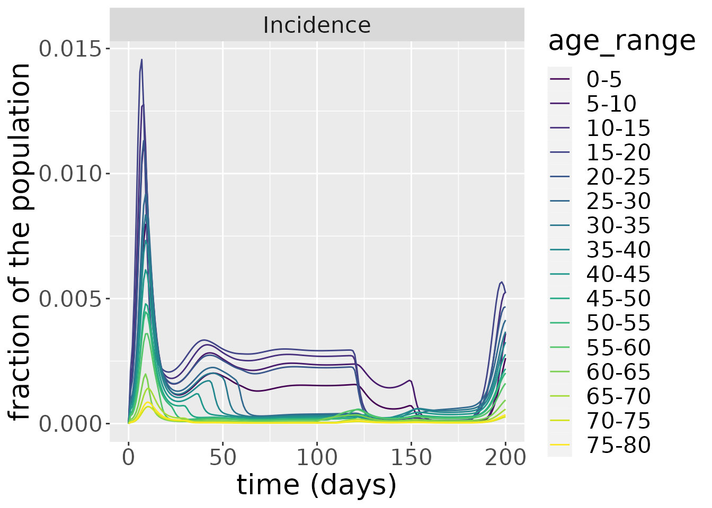
changes %>%
filter(compartment=="Deaths") %>%
ggplot(aes(x=time, y=value, colour=age_range)) +
geom_line() +
facet_wrap(~compartment, scales="free") +
scale_colour_viridis_d() +
labs(x = "time (days)", y = "fraction of the population") +
theme(text = element_text(size = 20)) 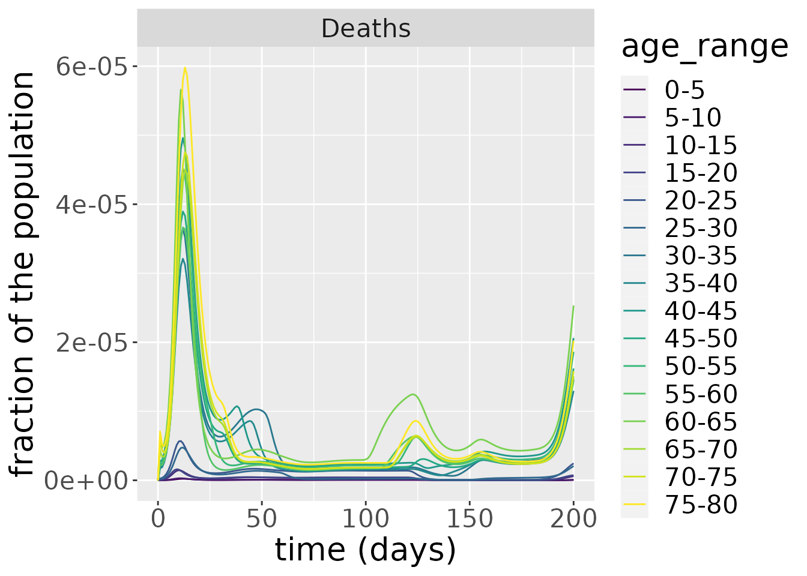
Sensitivity analysis
In this section, we investigate the sensitivity of the number of deaths to the loss-of-immunity rate in recovered individuals who have also been vaccinated, \(\delta_{VR}\). We run the model for varying values of \(\delta_{VR}\) and plot the number of deaths per day over time.
# function to setup and run model for different delta_VR values
run_SEIRDVAge <- function(delta_VR_val) {
inits <- list(S0=pop_fraction*0.99, E0=rep(0, n_ages), I0=pop_fraction*0.01,
R0=rep(0, n_ages), V0=rep(0, n_ages), VR0=rep(0, n_ages),
D0=rep(0, n_ages))
params <- list(beta=1, kappa=0.9, gamma=0.5, mu=mu, nu=0.4, delta_V=0.1,
delta_R=0.05, delta_VR = delta_VR_val)
interv<- interven
model <- SEIRDVAge(n_age_categories = n_ages,
contact_matrix = c_combined_wider,
age_ranges = as.list(age_names),
initial_conditions = inits,
transmission_parameters=params,
interventions = interv)
times <- seq(0, 200, by = 1)
out_df <- run(model, times)
out_df$changes
}
# run model across different delta_V values
delta_VR_vals <- c(0.001, 0.005, 0.01, 0.02, 0.05)
for(i in seq_along(delta_VR_vals)) {
delta_VR_temp <- delta_VR_vals[i]
temp <- run_SEIRDVAge(delta_VR_temp) %>% mutate(delta_VR=delta_VR_temp)
if(i == 1)
result <- temp %>% mutate(delta_VR=delta_VR_temp)
else
result <- result %>% bind_rows(temp)
}
# plot results
result %>%
filter(compartment=="Deaths") %>%
ggplot(aes(x=time, y=value, color = age_range)) +
facet_wrap(~delta_VR) +
geom_line() +
scale_colour_viridis_d() +
labs(x = "time (days)", y = "fraction of the population \n that died per day") +
theme(text = element_text(size = 20)) 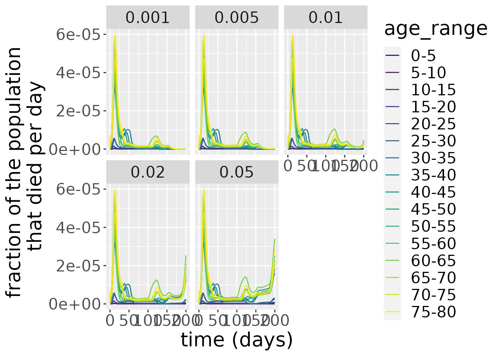 As we can see from the plot above, larger rates of immunity decay \(\delta_{VR}\) in vaccinated recovered individuals make the second wave of the number of deaths in the epidemic have a higher peak. For \(\delta_{VR}>0.01\) a third wave starts to manifest after \(t=175\).
We now investigate the sensitivity of the number of deaths to the maximum vaccination rate, \(\nu\). We run the model for varying values of \(\nu\) and plot the number of deaths per day over time.
# function to setup and run model for different nu values
run_SEIRDVAge <- function(nu_val) {
inits <- list(S0=pop_fraction*0.99, E0=rep(0, n_ages), I0=pop_fraction*0.01,
R0=rep(0, n_ages), V0=rep(0, n_ages), VR0=rep(0, n_ages),
D0=rep(0, n_ages))
params <- list(beta=1, kappa=0.9, gamma=0.5, mu=mu,
nu= nu_val,
delta_V=0.1, delta_R=0.05, delta_VR = 0.02)
interv<- interven
model <- SEIRDVAge(n_age_categories = n_ages,
contact_matrix = c_combined_wider,
age_ranges = as.list(age_names),
initial_conditions = inits,
transmission_parameters=params,
interventions = interv)
times <- seq(0, 200, by = 1)
out_df <- run(model, times)
out_df$changes
}
# run model across different nu values
nu_vals <- c(0, 0.2, 0.4, 0.6, 10)
for(i in seq_along(nu_vals)) {
nu_temp <- nu_vals[i]
temp <- run_SEIRDVAge(nu_temp) %>% mutate(nu=nu_temp)
if(i == 1)
result <- temp %>% mutate(nu=nu_temp)
else
result <- result %>% bind_rows(temp)
}
# plot results
result %>%
filter(compartment=="Deaths") %>%
ggplot(aes(x=time, y=value, color = age_range)) +
facet_wrap(~nu) +
geom_line() +
scale_colour_viridis_d() +
labs(x = "time (days)", y = "fraction of the population \n that died per day") +
theme(text = element_text(size = 20))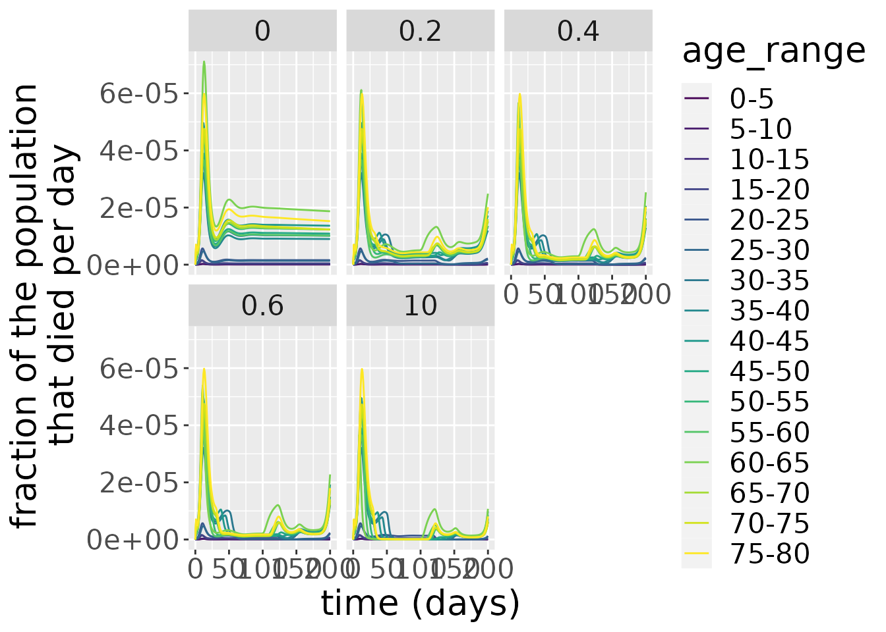 As we can see from the plot above, larger rates of maximum vaccination \(\nu\) make the subsequent waves of the number of deaths in the epidemic peak lower. For \(\nu=10\), we see no deaths in most age groups between the first two waves. For the case when no vaccination occurs \(\nu=0\) we see that the daily number of deaths remains relatively constant after the first wave and larger than for any of the other values analysed.
We now investigate the sensitivity of the start time of intervention values, start_val. We run the model for varying values of start_val and plot the number of deaths per day over time. The intervention profile is the same in each of the cases, only shifted by this quantity start_val.
# function to setup and run model for different start values
var_interven <- function(start){
interven <- vector(mode = "list", length = n_ages)
for(i in 1:n_ages){
if(is.element(i, 1:2)){
interven[[i]]$starts <- 150
interven[[i]]$stops <- 190
}
else if(is.element(i, 3:5)){
interven[[i]]$starts <- 120
interven[[i]]$stops <- 180
}
else if(is.element(i, 14:16)){
interven[[i]]$starts <- 30
interven[[i]]$stops <- 110
}
else{
interven[[i]]$starts <- 100-7*i
interven[[i]]$stops <- 190-7*i
}
interven[[i]]$starts <- interven[[i]]$starts + start
interven[[i]]$stops <- interven[[i]]$stops + start
interven[[i]]$coverages <- 1
}
return(interven)
}
run_SEIRDVAge <- function(start_val) {
start <- start_val
inits <- list(S0=pop_fraction*0.99, E0=rep(0, n_ages), I0=pop_fraction*0.01,
R0=rep(0, n_ages), V0=rep(0, n_ages), VR0=rep(0, n_ages),
D0=rep(0, n_ages))
params <- list(beta=1, kappa=0.9, gamma=0.5, mu=mu,
nu= 0.4, delta_V=0.1, delta_R=0.05, delta_VR = 0.02)
interv<- var_interven(start = start_val)
model <- SEIRDVAge(n_age_categories = n_ages,
contact_matrix = c_combined_wider,
age_ranges = as.list(age_names),
initial_conditions = inits,
transmission_parameters=params,
interventions = interv)
times <- seq(0, 200, by = 1)
out_df <- run(model, times)
out_df$changes
}
# run model across different nu values
start_vals <- c(10, 25, 40, 75, 94)
for(i in seq_along(start_vals)) {
start_temp <- start_vals[i]
temp <- run_SEIRDVAge(start_temp) %>% mutate(start=start_temp)
if(i == 1)
result <- temp %>% mutate(start=start_temp)
else
result <- result %>% bind_rows(temp)
}
# plot results
result %>%
filter(compartment=="Deaths") %>%
ggplot(aes(x=time, y=value, color = age_range)) +
facet_wrap(~start) +
geom_line() +
scale_colour_viridis_d() +
labs(x = "time (days)", y = "fraction of the population \n that died per day") +
theme(text = element_text(size = 20))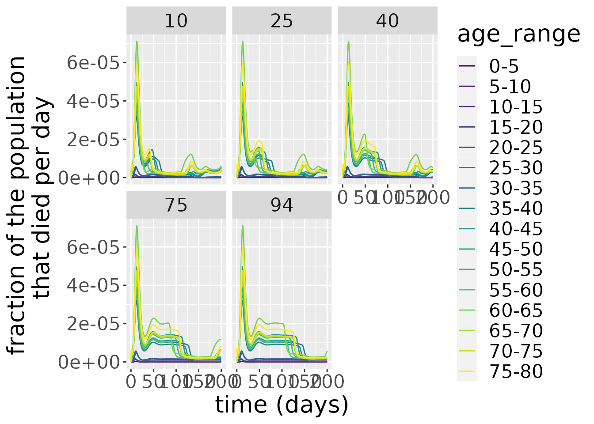 As we can see from the plot above, larger start time of intervention values, start_val make the second wave riding of the tail of the first one last plateau for longer and at a higher level.
We will compare now the two possible scenarios when we make the intervention the age-dependent and the case when we apply the same protocol of vaccination regardless of age groups.
# function to setup and run model for different delta_VR values
run_SEIRDVAge <- function(interv_type) {
inits <- list(S0=pop_fraction*0.99, E0=rep(0, n_ages), I0=pop_fraction*0.01,
R0=rep(0, n_ages), V0=rep(0, n_ages), VR0=rep(0, n_ages),
D0=rep(0, n_ages))
params <- list(beta=1, kappa=0.9, gamma=0.5, mu=mu, nu=0.4, delta_V=0.1,
delta_R=0.05, delta_VR = 0.02)
if(interv_type == 'distinct'){
interv<- interven
}
else{
interv <- list(list(starts=50,
stops=140,
coverages=1))
}
model <- SEIRDVAge(n_age_categories = n_ages,
contact_matrix = c_combined_wider,
age_ranges = as.list(age_names),
initial_conditions = inits,
transmission_parameters=params,
interventions = interv)
times <- seq(0, 200, by = 1)
out_df <- run(model, times)
out_df$changes
}
# run model across different intervention types
interv_types <- c('distinct', 'common')
for(i in seq_along(interv_types)) {
interv_type_temp <- interv_types[i]
temp <- run_SEIRDVAge(interv_type_temp) %>% mutate(interv_type=interv_type_temp)
if(i == 1)
result <- temp %>% mutate(interv_type=interv_type_temp)
else
result <- result %>% bind_rows(temp)
}
# plot results
result %>%
filter(compartment=="Deaths") %>%
ggplot(aes(x=time, y=value, color = age_range)) +
facet_wrap(~interv_type) +
geom_line() +
scale_colour_viridis_d() +
labs(x = "time (days)", y = "fraction of the population \n that died per day") +
theme(text = element_text(size = 20)) 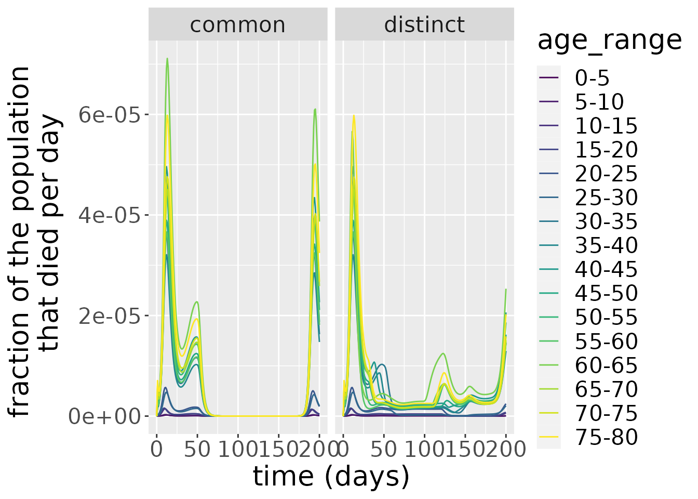 In the case of a common vaccination protocol for all age groups, not only is the first peak of the number of deaths higher than in the case of age-specific interventions, but the second peak tailing the first is also more pronounced and lasts longer and the third wave occurs sooner and is also higher in amplitude then for the distinct interventions case.